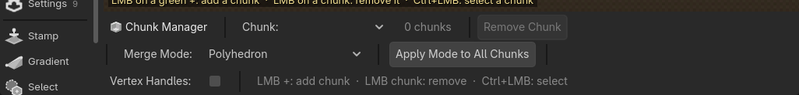
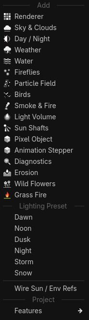
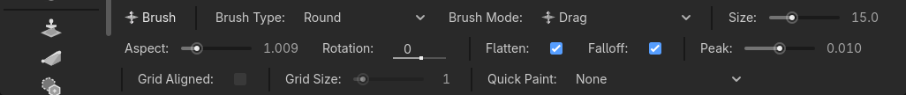
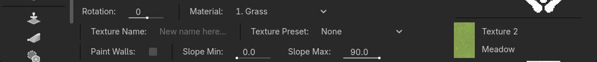
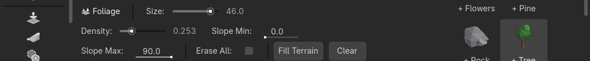
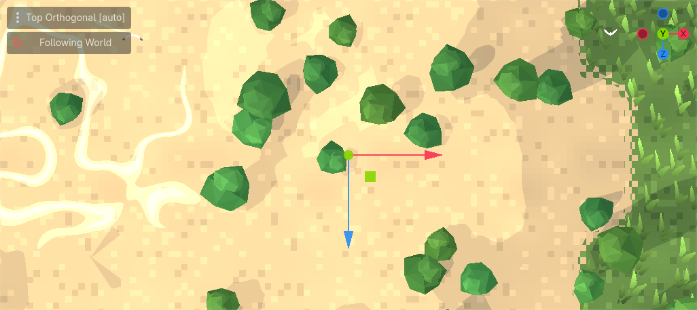
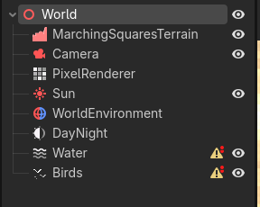
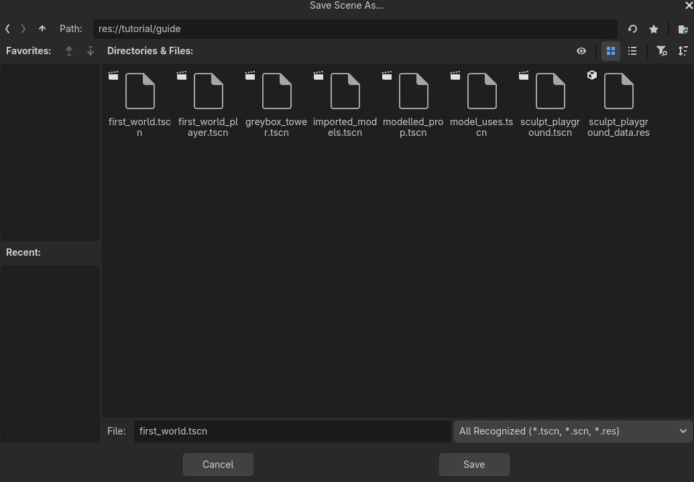

Your first world (quick start)
Start from an empty scene and build a lit, sculpted, painted, tree-covered pixel-art island, then run it as a game. Takes about half an hour.

What you'll learn
- How to start a new 3D scene and add a terrain.
- Why a new terrain shows nothing until you add chunks and add lighting.
- How to raise a hill, flatten ground, paint sand and plant trees.
- How to preview the pixel look, how the camera is set up for you, and how to save and run your world.
If you haven't opened Godot before, read Godot for Roblox builders first. It explains the Scene dock, the Inspector, and how to move the camera.
Three things that trip everyone up
These are the most common reasons a first world "doesn't work". Read them once before you start.
World) first if you need those.While a terrain tool is using Shift+wheel or Alt+wheel (for example, Shift+wheel for brush size), those wheel moves don't zoom the camera. The camera stays still while you resize the brush.
This is like opening a fresh baseplate, adding Terrain, using the Terrain Editor's Grow / Flatten / Paint tools, scattering some trees and pressing Play. The steps are in that order. The extra one is Pixel World, a one-click way to add sun, sky, day/night and water. Roblox has nothing like it; it's what gives the addon its finished pixel-art look.
The build, step by step
Tick each step as you go. The ticks are saved in your browser, so you can stop and come back later.
0Make a new 3D scene
Choose Scene → New Scene. The Scene dock now says Create Root Node and shows four buttons: 2D Scene, 3D Scene, User Interface, Other Node. Click 3D Scene. You get a Node3D root. Select it, press F2 and rename it
World.Scene → New Scene → 3D Scene. The root is renamed World.Coming from RobloxThe root node is your Workspace. A Node3D is an empty object in 3D space, like an empty Model or Folder.
1Add the terrain
With
Worldselected, click + in the Scene dock (or press Ctrl+A). In Create New Node, searchMarchingSquaresTerrainand click Create. The new node is selected automatically, so two new things appear: the terrain toolbar (a vertical column on the left of the 3D view) and the attribute strip along the bottom.+ → Create New Node → MarchingSquaresTerrain→ Create.Look at the Inspector. The terrain already has Contents (an automatically created
MarchingSquaresTerrainData, where its heights and paint are stored), a Tex Assign (the default texture set), Grid Type = Square, Chunk Size = 32 and Cell Size = 2.0 × 2.0. What it doesn't have yet is any chunks, so there's nothing to see.Watch outThe node shows a ⚠ warning. That's expected: it just means "no chunks yet". The next step clears it.
2Add chunks (the step everyone misses)
A chunk is one square tile of ground. Here each one is 32 cells × 2 m = 64 m across. Click Chunks in the terrain toolbar (or press 8). The strip becomes the Chunk Manager. Look at the terrain from above (top view: Kp 7). You'll see green "+" markers at the empty chunk slots.
- LMB a green +: adds a chunk there. It fills with grass straight away.
- LMB an existing chunk: removes it. Careful!
- Ctrl+LMB: selects a chunk.
Add four chunks in a 2×2 square (128 m × 128 m).
Top view with the Chunks tool: clicking green + markers adds chunks. 
The Chunk Manager strip: Chunk dropdown, chunk count, Remove Chunk, Merge Mode (Polyhedron), Apply Mode to All Chunks, Vertex Handles. Full details on Chunks, settings & saving. Coming from RobloxIn Roblox the terrain region is always there to sculpt. Here you first choose where ground exists by placing chunks, like laying baseplate tiles. Then you sculpt them.
TipIn the editor, your chunks blend into endless procedural grassland (the "Surroundings" feature), so it's hard to see where they end. The edge of your island becomes obvious once you run the game.
3Light it with Pixel World
Click Pixel World in viewport toolbar row 2. It's a drop-down Add menu, not a dialog. Add these four items, in this order:

The full Pixel World menu. Add What appears 1. Renderer A PixelRenderer node and a Camera. The view becomes pixelated, a Pixel World dock opens on the right (rows with Select or + Add), and a Renderer settings strip opens at the bottom (Pixel Size = 4, Mode = Anchor, Depth Range = 200…). 2. Sky & Clouds A Sun (directional light) and a WorldEnvironment (sky). This is what lights the scene. 3. Day / Night A DayNight node that drives the time of day. 4. Water A Water plane. Your flat terrain sits at height 0, the water level, so the land now reads as an island. The dock's + Add buttons do exactly the same thing as this menu.
Adding the Pixel World components. The 3D view is split into four viewports in this clip; if that happens to you, gotcha 3 explains how to get back to one. Watch outAfter adding, Water (and Birds, if you add it) may show a ⚠. They want to be connected to the Sun and sky. Choose Pixel World → Wire Sun / Env Refs to clear it. The scene runs fine either way.
TipWant a different mood? The Lighting Preset entries (Dawn, Noon, Dusk, Night, Storm, Snow) set the lighting in one click. Everything else in the menu is covered on The pixelizer and Sky, weather, water & effects.
4Raise a hill (Brush)
Click MarchingSquaresTerrain in the Scene dock again, then choose Brush (key 1). In the strip, set Brush Mode to Raise / Lower. Hover over the middle of your island and hold the left mouse button. A hill grows, with a smooth slope at its edges.
Brush in Raise / Lower mode: holding LMB raised the ground from 0 to about 10.6. 
The Brush strip (shown before switching to Raise / Lower): Brush Type, Brush Mode, Size (15), Aspect, Rotation, Flatten, Falloff, Peak. Input (Raise / Lower) Does Hold LMB Raise Hold RMB Lower LMB + RMB Flatten Ctrl+LMB / MMB / RMB Pick the Ceiling / Height / Floor from the ground under the cursor Shift+wheel Brush size Ctrl+wheel Strength In Raise / Lower mode the strip also shows Ceiling (16, the highest it will raise), Height (0), Floor (−8, the lowest it will dig) and Strength (about 4). The other mode, Drag, paints a selection of cells and then lifts them all at once. Every sculpt tool is covered on Sculpting terrain.
Coming from RobloxThis works like the Terrain Editor's Grow and Erode: hold to raise, right-click to lower, both together to flatten.
5Flatten a spot (Level)
Choose Level (key 2). It pulls ground toward the Height value in the strip (0 by default). LMB-drag across part of the hill to cut a flat plateau. Ctrl+LMB picks up the height under the cursor, so you can level other ground to match it.
Level: LMB-drag flattens toward Height. Strip: Brush Type, Size, Aspect, Rotation, Height, Falloff, Peak. Coming from RobloxThis is the Terrain Editor's Flatten.
6Paint some sand (Paint)
Choose Paint (key 6). In the Material dropdown pick 4. Sand, then LMB-drag over the ground. Ctrl+LMB picks up the material under the cursor, and Shift+wheel changes the size. A Textures panel also opens on the right (per-slot Pattern, Scale, Color, Grass toggle and sprite).
Painting Sand. The Textures panel is on the right. 
The Paint strip: Material, Texture Name, Texture Preset, Paint Walls, Slope Min / Max. The 16 ground materials:
- Grass
- Meadow
- Forest Floor
- Sand
- Dirt
- Cliff
- Dark Rock
- Snow
- Gravel
- Clay
- Moss
- Path
- Stone Tiles
- Ash
- Ice
- Void
Everything about painting (textures, tint, slopes) is on Painting, textures & tint.
Coming from RobloxSame as the Terrain Editor's Paint: pick a material, drag over the ground.
7Plant trees (Foliage)
Choose Foliage (key 5). A palette opens on the right: Grass, + Bush, + Flowers, + Pine, + Rock and + Tree. (A + means a built-in prop this terrain doesn't use yet; your first stroke adds it to the terrain and the + disappears.) Click + Tree, then LMB-drag across the island. Each drag scatters trees (one drag placed 138 of them). RMB or Shift+LMB erases.
Foliage: dragging to scatter trees. 
The Foliage strip: Size, Density (0.253), Slope Min / Max, the Erase All checkbox (erasing then removes every prop, not just the selected one), Fill Terrain, Clear, and the prop palette. All foliage options are on Foliage, grass & flowers.
Coming from RobloxIt's like dropping lots of tree Models from the Toolbox, except you paint them on in one stroke.
8Check the pixel look (Pixel Preview)
Click Pixel Preview in toolbar row 2. It turns on the final pixel-art processing in the editor: chunkier pixels and dithered edges, as in the game. The pixel style always shows once there's a PixelRenderer. This button controls the final-resolution pass.

Toggling Pixel Preview on and off. Pixel size, outlines, palettes and more are on The pixelizer.
9The camera (already done)
You don't need to add a camera. The Renderer from step 3 already added a
Camera, and the running game uses it. Select it to get Preview (look through it) and Pilot (fly it) toggles at the top-left of the 3D view.If you ever want to place one yourself: + →
Camera3D, then move it with the W / E gizmo (see page 1).
The finished tree: World→ terrain, Camera, PixelRenderer, Sun, WorldEnvironment, DayNight, Water, Birds. (Birds is an optional extra from the same Pixel World menu.) The ⚠ on Water and Birds clears with Wire Sun / Env Refs.10Save
Press Ctrl+S. The first time, Save Scene As… opens. Go into
tutorial→guide(Pathres://tutorial/guide/), set File tofirst_world.tscn, and click Save. (Pick a different name if you don't want to overwrite the ready-made copy.)Save Scene As…: moving through the folders. 
The dialog: Path at the top, folders in the middle, File name and Save at the bottom. The saved scene is self-contained. The terrain's chunks, heights, paint and foliage are stored inside the
.tscnitself; the only outside files it uses are the addon's own textures and shaders.11Run it!
Put the mouse over the 3D view and press F6 (Run Current Scene). A 1280×720 game window opens, shows the Godot splash, then your world: a green pixel-art island in a blue sea under a dawn sky, with your sand patch and trees in the middle. Press F8 to stop.
The finished first world, running. Coming from RobloxF6 = Play, F8 = Stop. The game runs in its own window, so close or stop it before making more edits.
Want to compare with the finished version? Open res://tutorial/guide/first_world.tscn from the FileSystem dock (tutorial → guide). It's exactly this build: 2×2 chunks, a hill, a levelled patch, sand, trees, Camera, PixelRenderer, Sun, WorldEnvironment, DayNight, Water and Birds.
Terrain tools at a glance
While the terrain is selected, the toolbar on the left of the 3D view lists its tools. Number keys pick them:
Keys 1, 2, 5, 6 and 8 were used in this walkthrough. The others follow the toolbar order (Stamp, Gradient and Select come after Settings and have no number key). Each tool's page lists its exact key.
Chunks
Add/remove ground tiles. LMB a green + adds, LMB a chunk removes, Ctrl+LMB selects. Strip: Chunk, count, Remove Chunk, Merge Mode, Apply Mode to All Chunks, Vertex Handles.
- Deep page
- Chunks, settings & saving
Brush
Sculpt. Modes: Raise / Lower (hold LMB raise, RMB lower, both flatten) and Drag. Size 15 default; Ceiling 16, Height 0, Floor −8, Strength ≈ 4.
- Keys
- Shift+wheel size · Ctrl+wheel strength
- Deep page
- Sculpting terrain
Level
LMB-drag levels to Height; Ctrl+LMB picks the hovered height.
- Deep page
- Sculpting terrain
Paint
Paint one of 16 materials. Ctrl+LMB picks; Paint Walls; Slope Min / Max; Textures panel.
- Deep page
- Painting, textures & tint
Foliage
Scatter Grass / Tree / Bush / Flowers / Pine / Rock. RMB or Shift+LMB erases (tick Erase All to erase every prop). Density, Slope, Fill Terrain, Clear.
- Deep page
- Foliage, grass & flowers
Pixel World
Add menu: Renderer, Sky & Clouds, Day / Night, Weather, Water, Fireflies, Particle Field, Birds, Smoke & Fire, Light Volume, Sun Shafts, Pixel Object, Animation Stepper, Diagnostics, Erosion, Wild Flowers, Grass Fire; Lighting Presets; Wire Sun / Env Refs; Features.
- Deep pages
- The pixelizer · Sky, weather, water & effects
Pixel Preview
Toggle the final pixel-art pass in the editor.
- Deep page
- The pixelizer
Roblox UI
Studio-style Model / Edit ribbon for building with parts. Newly inserted builder parts come in solid grey, like a fresh Roblox Part.
- Deep page
- Greyboxing with the Roblox UI
Recipes & variations
Go back to Chunks (8) and click more green + markers around the edge. Each new chunk adds 64 m of grass that you can sculpt.
Brush in Raise / Lower mode: raise to Ceiling with LMB, then hold RMB elsewhere to dig down toward Floor (−8). Remember the water sits at height 0, so anything you dig below that is under the sea line.
Paint (6), material 4. Sand, and drag along the island's edge where it meets the water. Use Shift+wheel for a narrower brush.
Pixel World → Lighting Preset → Dusk (or Dawn, Noon, Night, Storm, Snow), then run with F6.
Foliage (5), pick Tree (or + Tree / + Pine), and click Fill Terrain to cover everything. Clear removes every copy of the selected prop again.
If something goes wrong
I can't sculpt anything
The terrain has no chunks. Use Chunks (8) and click a green +.
Everything is dark / black
No sun yet. Pixel World → Sky & Clouds, or pick a Lighting Preset.
A chunk disappeared when I clicked
LMB on an existing chunk removes it. Press Ctrl+Z.
Ctrl+1 or other number shortcuts don't work
The terrain is selected, so number keys switch terrain tools. Click World first.
The 3D view is split into four
Select a non-terrain node, then Ctrl+1 (or View → 1 Viewport).
Water / Birds show a ⚠ warning
Pixel World → Wire Sun / Env Refs. It runs fine even with the warning.
I can't tell where my island ends
That's the endless Surroundings grassland. Run the game: the island is clearly bounded by sea.
The camera zooms when I change brush size
It shouldn't: Shift/Alt+wheel don't zoom while a terrain tool uses them. If the camera still zooms, your copy of the addon is older than this guide; update it.
Brush keys do nothing
Make sure MarchingSquaresTerrain is selected (the terrain toolbar is only there when it is).
More fixes are on Troubleshooting & FAQ.
Check yourself
You've just added a MarchingSquaresTerrain and nothing shows up. Why, and what do you do?
A new terrain has 0 chunks. Choose Chunks (8), look from above and click a green + marker.
Which Pixel World entry actually lights the scene?
Sky & Clouds. It adds the Sun and the WorldEnvironment. (Renderer adds the pixel renderer and the camera.)
Why does a flat terrain look like an island once Water is added?
The chunks sit at height 0, the water surface. The water surrounds them, so the land reads as an island. Anything you raise becomes a hill above the sea.
Do you need to add a Camera3D before running?
No. Adding the Renderer also added a Camera, and the game uses it.